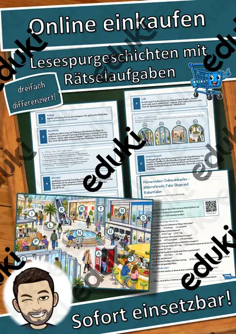
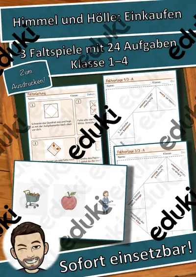

Ein Festtagsmenü planen – Einkauf, Mengen und Zeitplan – Lesespurgeschichte mit Rätselaufgaben (Klasse 8)
Ein Festtagsmenü planen – Einkauf, Mengen und Zeitplan – Lesespurgeschichte Hauswirtschaft (Klasse 8)Schick deine Klasse auf eine Lesespur durch die Schulküche! Lukas und Hira aus der 8c planen mit ihrer Lehrerin Frau Huber vor den Weihnachtsferien ein Festtagsmenü für 24 Personen – Maskottchen ist der kleine Kochlöffel Rudi. Von der Pinnwand über Kochbuchregal, Vorratsschrank, Kühlschrank, Arbeitsplatte, Herd und Spüle bis an die Festtafel führt der Weg. Am Ende jedes Abschnitts verrät ein Hinweis den nächsten Ort auf dem Plan – nur wer genau liest, findet den Weg und sammelt alle geheimen Buchstaben zum Lösungswort.
Die passende Lesespur für Hauswirtschaft bzw. Ernährung und Soziales in Klasse 8 (auch 7 und 9) – ideal vor Weihnachten oder vor einem Klassenessen, für Stationenlernen, Praxisvorbereitung oder Vertretungsstunden. Ohne Marken. Geeignet für Mittelschule, Realschule und Gesamtschule. Das Material ist SOFORT EINSETZBAR und in DREI DIFFERENZIERUNGSSTUFEN (leicht ★ / mittel ★★ / schwer ★★★) angelegt.WICHTIG: Das komplette Material ist sowohl in FARBE als auch in SCHWARZ-WEISS enthalten – ideal zum Sparen von Druckkosten.DAS IST ENTHALTEN
- Lesespurgeschichte in 3 Niveaus (leicht, mittel, schwer)
- farbiger Plan der Schulküche als Suchkarte
- Hörverstehen mit QR-Code zur MP3 (selbstständiges Hören mit Kopfhörern)
- vier Aufträge auf dem Weg: eine Zuordnung zur richtigen Lagerung, eine Rechenaufgabe an der Arbeitsplatte, ein Quiz und ein Steckbrief
- Rätselseite (Wörter-Suchsel + Rätselfragen rund um die Menüplanung)
- Ausmalbild zum Thema
- ausführliches Lösungsblatt für die Lehrkraft mit allen Lösungen (Lesespur, Aufträge, Hörverstehen, Rätselseite)
- alles zusätzlich als komplette Schwarz-Weiß-VarianteSO GEHT DIE LESESPURDie Schülerinnen und Schüler lesen ab START, finden im Text den nächsten Ort, suchen ihn auf dem Plan und lesen bei dieser Station weiter. An jeder richtigen Station gibt es einen Buchstaben. Eingeplante Sackgassen (Fenster, Mülleimer, Garderobe, Waschmaschine) sind keine Stationen und dienen der Selbstkontrolle. Am Ende werden die gesammelten Buchstaben umgestellt und ergeben ein geheimes Lösungswort. (Die Lösungen sind selbstverständlich nur im Lösungsblatt für die Lehrkraft enthalten.)INHALTLICHER SCHWERPUNKTGästezahl, Budget, Allergien und Essgewohnheiten abfragen, Menüfolge aus Vorspeise, Hauptgang und Nachspeise, vegetarischer Hauptgang, Vorrat prüfen und Einkaufsliste nach Abteilungen, saisonale und regionale Lebensmittel, Lagerung und Kühlkette, Küchenhygiene, Rezeptmengen umrechnen, Arbeitsteilung und Zeitplan rückwärts planen.ABGEDECKTER LEHRPLAN (Klasse 8)
- Ernährung und Soziales / Hauswirtschaft – Speisen und Menüs planen, Einkauf, Lagerung und Arbeitsabläufe organisieren, Hygieneregeln einhalten (LehrplanPLUS Bayern Mittelschule).
- Mathematik – Rezeptmengen proportional umrechnen; Grundrechenarten im Sachzusammenhang.
- Deutsch – Sachtexte sinnentnehmend lesen; einem Hörtext gezielt Informationen entnehmen (Hörverstehen mit MP3).Geeignet für Freiarbeit, Stationenlernen, Vertretungsstunden, Wochenplan und als Einstieg ins Thema.
Ähnliche Materialien

Mengen Lückentext mit Wortspeicher Hörverstehen und Suchsel

Klammerkarten: Einkaufen – Klammerkarten – Klasse 1–4

Online einkaufen – Widerrufsrecht, Fake-Shops und Rabattfallen – Lesespurgeschichte mit Rätselaufgaben (Klasse 8)

Rohstoffe einkaufen: Bezugskosten und Rabatt – Arbeitsheft mit Lösungen (BwR 8, Realschule Bayern)

Himmel und Hölle: Einkaufen – Himmel und Hölle – Klasse 1–4

Rabatt und Bonus buchen: Einkauf und Verkauf – Arbeitsheft mit Lösungen (BwR 8, Realschule Bayern)

Der Kühlschrank – Lesespurgeschichte mit Rätselaufgaben (Klasse 8)